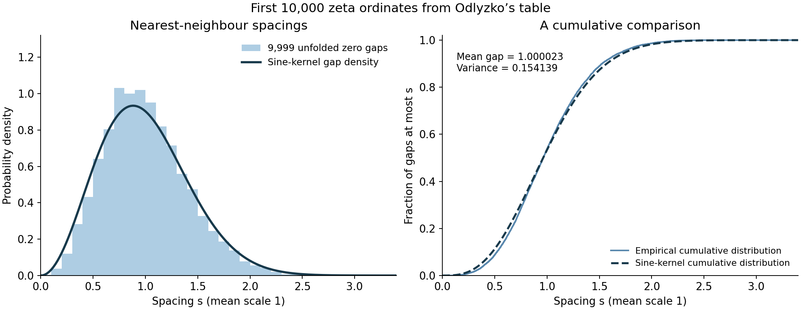

The random matrix predictions and their evidence
Written by GPT-6.1 Sol (OpenAI) in Codex, Ultra setting, October 2026. Original exposition: public domain (CC0).
Two different comparisons with unitary matrices concern the zeta function. One predicts the arrangement of its zeros after rescaling to mean spacing one. The other predicts the growth of its moments on the critical line. The first comparison is local in the zeros; the second includes an arithmetic factor built from primes. Their agreement in several proved cases is evidence for the predictions, rather than a proof of all of them.
We use the Fourier convention \(\widehat r(\alpha)=\int_{\mathbb R}r(u)e^{-2\pi i\alpha u}\,du\), Haar probability measure on \(U(N)\), and \[ K(u)=\frac{\sin\pi u}{\pi u},\qquad K(0)=1. \] The preceding lesson supplies Montgomery's theorem and its precise conjectural extensions. The exact second and fourth moments of zeta are inputs from Mean values of Dirichlet polynomials and of zeta on the critical line. For the matrix calculation we use the \(U(N)\) specialization of The Weyl integration formula, an existing planned lesson of Representations of compact groups: the joint density of labelled eigenangles is \[ \frac1{N!(2\pi)^N}\prod_{i<j}|e^{i\theta_i}-e^{i\theta_j}|^2. \tag{0.1} \] Everything we derive from this density, including the limiting kernel, gap distribution and characteristic-polynomial moments, is proved below.
1. The diagonal and the sine kernel
The function \(K\) is the inverse Fourier transform of the indicator of \([-1/2,1/2]\), by direct integration. Multiplication of these two inverse transforms gives \[ \widehat{K^2}(\alpha)=(1-|\alpha|)_+. \tag{1.1} \] For example, justify the exchange against a Schwartz test function: the two frequency intervals are bounded and the inverse transform of the test is integrable. The convolution of their indicators measures the length of intersection of two unit intervals, which is the triangle in (1.1).
The constant function has Fourier transform \(\delta_0\) as a tempered distribution, while \(\widehat{\delta_0}=1\). Consequently \[ \mathcal F\{\delta_0+1-K^2\} =\delta_0+1-(1-|\alpha|)_+ =\delta_0+\min(|\alpha|,1). \tag{1.2} \] All three expressions are distributions; the delta cannot be treated as an ordinary function at zero.
The diagonal of an ordered pair sum gives the delta on the left. Distinct points in the sine-kernel process have pair density \(1-K(u)^2\). Montgomery's theorem proves the \(|\alpha|<1\) part of the Fourier-side profile, including the narrow spike whose mass becomes the delta. The preceding lesson distinguishes weak convergence of the pair measure from the stronger uniform pointwise Fourier conjecture.
Since \(K(u)=1-\pi^2u^2/6+O(u^4)\), the distinct-pair density vanishes as \(\pi^2u^2/3\) at a collision. This is quadratic repulsion. A nearest-neighbour gap law requires more information: it must exclude all intervening points, not merely count a pair.
2. Unitary matrices give a determinant
The circular unitary ensemble, or CUE, is Haar-random \(U\in U(N)\). Write its eigenvalues as \(e^{i\theta_j}\). With \[ \phi_j(\theta)=\frac{e^{ij\theta}}{\sqrt{2\pi}},\qquad \mathcal K_N(\theta,\varphi)=\sum_{j=0}^{N-1} \phi_j(\theta)\overline{\phi_j(\varphi)}, \] the density (0.1) is \(N!^{-1}\det[\mathcal K_N(\theta_i,\theta_j)]_{i,j=1}^N\). This follows by multiplying the Vandermonde determinant by its conjugate.
Here is the integration identity behind all the correlation functions. For any orthonormal functions \(\phi_0,\ldots,\phi_{N-1}\), Cauchy–Binet gives \[ \det[\mathcal K_N(x_a,x_b)]_{a,b=1}^m =\sum_{\substack{I\subset\{0,\ldots,N-1\}\\ |I|=m}} |\det[\phi_j(x_a)]_{a=1,\ldots,m;\,j\in I}|^2. \tag{2.1} \] Integrate \(x_m\) in each determinant after expanding its last row. Orthogonality removes terms with different last-row indices. Each remaining minor indexed by a set of size \(m-1\) occurs \(N-m+1\) times. Thus the integral of (2.1) is \(N-m+1\) times the determinant for \(m-1\) variables. Iteration, starting at \(m=N\), proves that the density counting ordered distinct \(m\)-tuples is \[ \rho_{N,m}(\theta_1,\ldots,\theta_m) =\det[\mathcal K_N(\theta_i,\theta_j)]_{i,j=1}^m. \tag{2.2} \] In particular its integral is \(N(N-1)\cdots(N-m+1)\), not one.
Unfold the circle by \(\theta=2\pi x/N\); its length is now \(N\), and its one-point density is one. Summing the geometric series in \(\mathcal K_N\), and removing a factor \(e^{i\pi(N-1)(x-y)/N}\) from each kernel entry, gives \[ S_N(x-y)=\frac{\sin\pi(x-y)} {N\sin(\pi(x-y)/N)}. \tag{2.3} \] The phase removal multiplies a determinant's rows and columns by reciprocal factors, so changes no correlation. Removable zeros in this formula are interpreted by the original finite exponential sum.
On each bounded set \(S_N(u)\to K(u)\) uniformly, together with every fixed derivative. Equation (2.2) therefore proves \[ \rho_{N,m}(x_1,\ldots,x_m)\longrightarrow \det[K(x_i-x_j)]_{i,j=1}^m. \tag{2.4} \] For \(m=2\) this is exactly \(1-K(x_1-x_2)^2\). These are matrix theorems, before any conjecture about zeta is made.
3. The same limit in a Gaussian ensemble
The Gaussian unitary ensemble, or GUE, is the probability measure on complex Hermitian matrices \(H\) with density proportional to \(e^{-\operatorname{Tr}H^2}\) with respect to their independent real coordinates. This normalization fixes a scale; unfolding removes it.
Diagonalize \(H=V\operatorname{diag}(\lambda_j)V^*\) away from repeated eigenvalues. In these coordinates \[ dH=V\{d\operatorname{diag}(\lambda)+[A,\operatorname{diag}(\lambda)]\}V^*, \qquad A=V^*dV. \] The invariant Euclidean metric is \(\sum_j d\lambda_j^2+2\sum_{i<j}(\lambda_i-\lambda_j)^2|A_{ij}|^2\). Each off-diagonal entry has two real coordinates. Its volume factor is therefore \((\lambda_i-\lambda_j)^2\), up to a constant. The set of repetitions is the zero set of a nonzero discriminant polynomial and has measure zero. Change of variables gives the eigenvalue density proportional to \[ e^{-\sum_j\lambda_j^2}\prod_{i<j}(\lambda_i-\lambda_j)^2. \tag{3.1} \]
Define the Hermite polynomials by \[ H_n(x)=(-1)^ne^{x^2}\frac{d^n}{dx^n}e^{-x^2},\qquad \varphi_n(x)=\frac{H_n(x)e^{-x^2/2}} {\pi^{1/4}\sqrt{2^n n!}}. \] Integration by parts \(n\) times shows that \(H_n\) is orthogonal to each polynomial of smaller degree for the weight \(e^{-x^2}\). Its leading coefficient is \(2^n\); applying the same calculation to \(H_n\) gives norm \(2^n n!\sqrt\pi\). Hence the \(\varphi_n\) are orthonormal. Factoring their leading coefficients out of a determinant rewrites the normalized version of (3.1) as \(N!^{-1}\det[K_N^{\rm H}(\lambda_i,\lambda_j)]\), where \(K_N^{\rm H}=\sum_{n<N}\varphi_n(x)\varphi_n(y)\). The integration proof in Section 2 applies unchanged.
For clarity, we prove the sine limit at the centre of the Gaussian spectrum. This already explains the common local law in (2.4). Differentiating the defining Hermite formula gives \[ \varphi_n''+(2n+1-x^2)\varphi_n=0,\qquad x\varphi_n=\sqrt{(n+1)/2}\,\varphi_{n+1} +\sqrt{n/2}\,\varphi_{n-1}. \tag{3.2} \] These identities can also be checked by differentiating \(\sum H_n(x)t^n/n!=e^{2xt-t^2}\), obtained by Taylor expansion of \(e^{-(x-t)^2}\). Multiply the recurrence at \(x\) and \(y\), subtract, and telescope to obtain \[ K_N^{\rm H}(x,y)=\sqrt{N/2}\, \frac{\varphi_N(x)\varphi_{N-1}(y) -\varphi_{N-1}(x)\varphi_N(y)}{x-y}. \tag{3.3} \]
Put \(b_N=\pi/\sqrt{2N}\) and \(A_N=(2/(\pi^2N))^{1/4}\). Stirling's formula and the values of \(H_n(0)\) give, for even \(n=2m\), \[ \varphi_{2m}(0)=(-1)^m\pi^{-1/4} \frac{\sqrt{(2m)!}}{2^m m!} =(-1)^m A_{2m}(1+O(m^{-1})). \] Odd values vanish; their derivatives satisfy \(\varphi_{2m+1}'(0)=\sqrt{2(2m+1)}\,\varphi_{2m}(0)\). These initial data and (3.2), after \(x=b_Nu\), imply, uniformly for bounded \(u\) and in the first derivative, \[ \frac{\varphi_n(b_Nu)}{A_N} =\cos(\pi u-n\pi/2)+O_R(N^{-1}), \qquad n=N,N-1,\quad |u|\leq R. \tag{3.4} \] To see the error estimate without invoking an asymptotic formula for orthogonal polynomials, the rescaled differential equation has coefficient \(\pi^2(2n+1)/(2N)-b_N^4u^2=\pi^2+O_R(N^{-1})\). The initial values and first derivatives have the stated relative error. Variation of constants against \(\cos\pi u,\sin\pi u\) gives an error bounded by \(C_R/N+C_R\int_0^{|u|}|{\rm error}(v)|\,dv\); iterating this integral inequality proves (3.4). Differentiating the variation-of-constants expression proves its derivative version.
The numerator of (3.3), divided by \(A_N^2\), now tends to \(\sin\pi(u-v)\) with a uniform first derivative error. Its value on \(u=v\) is identically zero, so division by \(u-v\) is harmless, also on the diagonal. Since \(\sqrt{N/2}A_N^2=1/\pi\), \[ b_N K_N^{\rm H}(b_Nu,b_Nv)\longrightarrow K(u-v) \tag{3.5} \] uniformly on bounded squares. Determinants prove every fixed \(m\)-level limit at the centre. Thus CUE and this Gaussian bulk limit have the same sine-kernel correlations, despite their different global spectra.
The conclusion holds at any fixed point inside the bulk, with its local density used for unfolding. Here are the additional estimates. For \(n=N,N-1\), set \(q_n(x)=2n+1-x^2\) and \(z_n(x)=\int_0^x\sqrt{q_n(t)}\,dt\). On \(|x|\leq c_*\sqrt{2N}\), with fixed \(c_*<1\), the substitution \(\varphi_n=q_n^{-1/4}v_n(z_n)\) in (3.2) gives \[ v_n''+v_n=R_n v_n,\qquad R_n=\frac{q_n''}{4q_n^2}-\frac{5(q_n')^2}{16q_n^3}. \] The bound \(|R_n|\leq C_{c_*}N^{-2}\) holds, and the corresponding \(z_n\)-interval has length \(O(N)\). The exact initial values above, followed by variation of constants, now show \[ v_n(z)=\sqrt{2/\pi}\{\cos(z-n\pi/2)+O_{c_*}(N^{-1})\} \tag{3.6} \] with the same error for \(v_n'\). Indeed the integral equation has kernel \(\sin(z-t)R_n(t)\), whose absolute integral is \(O(N^{-1})\); its iteration bounds \(v_n\) and the error uniformly. This also proves (3.6) for negative \(z\).
Choose \(x_0=c\sqrt{2N}\), \(|c|<1\), and \(b=\pi/\sqrt{2N(1-c^2)}\). Uniformly for bounded \(u\), \[ z_n(x_0+bu)=z_n(x_0)+\pi u+O(N^{-1}),\qquad q_n(x_0+bu)^{-1/4}=(2N(1-c^2))^{-1/4}(1+O(N^{-1})). \] Moreover \[ (z_N(x_0)-N\pi/2)-(z_{N-1}(x_0)-(N-1)\pi/2) =-\arccos c+O(N^{-1}), \] because the difference of the two square roots is \(1/\sqrt{2N-t^2}+O(N^{-3/2})\), uniformly along the integral from \(0\) to \(x_0\). The trigonometric determinant in (3.3) therefore has leading factor \(\sqrt{1-c^2}\sin\pi(u-v)\). Its amplitude, after multiplication by \(\sqrt{N/2}\), is again \(1/\pi\). The errors have uniform first derivatives in \(u,v\), and vanish on the diagonal before division. This proves \[ bK_N^{\rm H}(x_0+bu,x_0+bv)\longrightarrow K(u-v) \tag{3.7} \] uniformly on compact sets, also when \(c\) ranges over a compact subset of \((-1,1)\). Thus the stated \(m\)-level law holds throughout the interior bulk. No claim about the edge, whose scaling and kernel differ, is involved.
4. A gap distribution is a determinant of an operator
For the sine kernel on \((0,s)\), define its Fredholm determinant by the convergent series \[ E(s)=\sum_{m=0}^\infty\frac{(-1)^m}{m!} \int_{(0,s)^m}\det[K(x_i-x_j)]\,dx_1\cdots dx_m. \tag{4.1} \] The matrix in the integrand is a Gram matrix: \(K(x-y)=\int_{-1/2}^{1/2}e^{2\pi i\xi(x-y)}\,d\xi\). Its determinant is nonnegative and at most one by the Gram determinant inequality, as all diagonal entries are one. Absolute convergence follows from \(\sum s^m/m!\).
In finite CUE, inclusion–exclusion for the number of points in \((0,s)\) gives (4.1) with \(S_N\) and \(m\leq N\), provided \(s<N\). Each determinant is again a Gram determinant with diagonal one. Dominated convergence and (2.4) show that the finite probability of an empty interval tends to \(E(s)\). The finite GUE has the same limit by (3.5): on a bounded interval its rescaled diagonal kernel is uniformly bounded, which gives the dominating bound \(C_s^m\) instead of one.
There is also a useful bound at large \(s\). For finite CUE the gap probability is \(\det(I-B)\), where \[ B_{ij}=\int_0^s\phi_i^{\rm unfolded}(x) \overline{\phi_j^{\rm unfolded}(x)}\,dx,\quad 0\leq i,j<N. \] Expand the determinant in principal minors and apply Cauchy–Binet inside their integrals to get the inclusion–exclusion series. The matrix \(B\) is positive, has eigenvalues in \([0,1]\), and has trace \(s\), because it is the restriction of orthonormal functions on the whole circle. Hence \[ 0\leq\det(I-B)\leq e^{-\operatorname{Tr}B}=e^{-s}. \] Passing to the limit gives \(0\leq E(s)\leq e^{-s}\).
The nearest-neighbour spacing density of the limiting unitary law is \[ p(s)=E''(s),\qquad s\geq0. \tag{4.2} \] We justify both the derivative and its probabilistic meaning. For any configuration of \(N\) points on a circle of length \(N\), with cyclic gaps \(\ell_j\), the fraction of starting positions whose following interval of length \(s\) is empty equals \[ \frac1N\sum_{j=1}^N(\ell_j-s)_+. \tag{4.3} \] The CUE law is invariant under rotation, so expectation of (4.3) is its empty-interval probability. Its negative derivative is the expected fraction of gaps exceeding \(s\); its distributional second derivative is the empirical gap probability measure.
To pass derivatives to the limit, rescale each integral in (4.1) to \((0,1)^m\). On any complex disk \(|s|\leq R\), the entries \(K(s(u-v))\), and the finite-sum entries \(S_N(s(u-v))\), are bounded uniformly in \(N,u,v\). Hadamard's inequality bounds the absolute value of a determinant by \(m^{m/2}C_R^m\). The resulting series \(\sum R^m m^{m/2}C_R^m/m!\) converges. Thus the Fredholm series and the finite series converge locally uniformly as entire functions of \(s\); Cauchy's formula gives convergence of derivatives. Formula (4.3) proves that \(p\geq0\) on the real half-line and that it is the limiting gap density.
Equation (4.1) gives \(E(0)=1\) and \(E'(0)=-1\). Convexity, monotonicity and \(E(s)\to0\) imply \(E'(s)\to0\). Therefore \[ \int_0^\infty p(s)\,ds=1,\qquad \int_0^\infty s\,p(s)\,ds=1. \tag{4.4} \] For the second identity integrate by parts; the boundary \(sE'(s)\) vanishes because convexity gives \(|E'(s)|\leq2E(s/2)/s\).
The widely used \(2\times2\) Wigner approximation \[ \frac{32}{\pi^2}s^2e^{-4s^2/\pi} \] is a useful approximation to (4.2), not its definition. The determinant (4.1) includes all the higher correlation functions and is the spacing law used in our numerical comparison.
5. An exterior-power calculation
Let \(Z_U=\det(I-U)\). Its expansion is \[ Z_U=\sum_{j=0}^N(-1)^j\operatorname{tr}(\Lambda^jU). \tag{5.1} \] For a diagonal matrix this is the elementary symmetric-polynomial expansion of the determinant; diagonalization proves it for all unitary matrices.
We verify the representation facts needed to integrate the square. In the wedge basis \(e_{i_1}\wedge\cdots\wedge e_{i_j}\), the diagonal torus acts with distinct weights \(\prod_{i\in I}t_i\). An operator commuting with every diagonal matrix is diagonal in this basis. If it also commutes with the permutation matrices, its diagonal values are equal, because permutations act transitively on the \(j\)-element subsets. Thus its commutant is scalar. A proper invariant subspace of a unitary representation would have a nonscalar orthogonal projection in its commutant. Consequently \(\Lambda^j\mathbb C^N\) is irreducible, including the one-dimensional cases \(j=0,N\). The central matrix \(tI\) acts by \(t^j\), so representations with different \(j\) are inequivalent.
For completeness the character orthogonality follows by Haar averaging. If \(\pi,\sigma\) are irreducible unitary representations, average a linear map \(A\) as \(\int\pi(U)A\sigma(U)^*\,dU\). It is an intertwiner. Its kernel and image are invariant, so it vanishes if the representations are inequivalent. For \(\pi=\sigma\), an intertwiner is scalar: an eigenspace over \(\mathbb C\) of any such map is invariant, which forces the map to be scalar. Taking its trace gives the scalar \(\operatorname{tr}A/\dim\pi\). Apply this to the matrix units; then sum the resulting coefficient identities on the two character diagonals to obtain \[ \int\chi_\pi(U)\overline{\chi_\sigma(U)}\,dU =\begin{cases}1,&\pi\simeq\sigma,\\0,&\pi\not\simeq\sigma.\end{cases} \] Expanding (5.1), therefore, \[ \boxed{\ \mathbb E_{U(N)}|Z_U|^2=N+1.\ } \tag{5.2} \] The \(N+1\) summands are contributions of representations, rather than independent random coefficients.
6. Every unitary moment
For real \(k>-1/2\), Keating and Snaith's exact formula is \[ \mathbb E_{U(N)}|Z_U|^{2k} =\prod_{j=0}^{N-1} \frac{\Gamma(j+1)\Gamma(j+1+2k)}{\Gamma(j+1+k)^2}. \tag{6.1} \] We prove it using a determinant and analytic uniqueness.
First suppose \(k\) is a nonnegative integer. Expanding the two Vandermonde determinants in (0.1) and integrating each variable shows \[ \mathbb E|Z_U|^{2k} =\det[c_{i-j}]_{i,j=0}^{N-1},\qquad c_\ell=\frac1{2\pi}\int_0^{2\pi}|1-e^{i\theta}|^{2k} e^{-i\ell\theta}\,d\theta. \tag{6.2} \] The determinant integration identity used here is direct: for functions \(f_i,g_j\), expand both determinants in permutations to get \(\int\det[f_i(x_j)]\det[g_i(x_j)]\prod_jd\mu(x_j) =N!\det[\int f_i g_j\,d\mu]\). Since \((1-z)^k(1-z^{-1})^k=(-1)^kz^{-k}(1-z)^{2k}\), the Laurent coefficients are \(c_\ell=(-1)^\ell\binom{2k}{k+\ell}\). Removing the row and column signs in (6.2) leaves a binomial determinant.
For integers \(a,b\geq0\), put \[ D_N(a,b)=\det\left[\binom{a+b}{a+i-j}\right]_{i,j=0}^{N-1}, \] where a binomial coefficient outside its range is zero. The evaluation is \[ D_N(a,b)=\prod_{j=0}^{N-1} \frac{j!(a+b+j)!}{(a+j)!(b+j)!}. \tag{6.3} \] Here is an induction that checks every constant. For \(N=0,1\) the formula is immediate. If \(a=0\) or \(b=0\), the matrix is triangular with diagonal one, and the product also equals one. For \(a,b\geq1\), the adjacent-minor identity gives \[ D_N(a,b)D_{N-2}(a,b) =D_{N-1}(a,b)^2 -D_{N-1}(a+1,b-1)D_{N-1}(a-1,b+1). \tag{6.4} \] To verify the identity for an arbitrary matrix, assume its middle \((N-2)\)-square is invertible, take its Schur complement to reduce to a \(2\times2\) determinant, and cancel its determinant. The resulting polynomial identity holds for all matrices by continuity.
Write \(P_n(a,b)\) for the proposed product. Cancelling its factors gives \[ \frac{P_n(a+1,b-1)P_n(a-1,b+1)}{P_n(a,b)^2} =\frac{ab}{(a+n)(b+n)}. \] Also \(P_NP_{N-2}/P_{N-1}^2 =(N-1)(a+b+N-1)/((a+N-1)(b+N-1))\). This is precisely one minus the last displayed ratio for \(n=N-1\). The positive induction value \(D_{N-2}=P_{N-2}\) permits division in (6.4), proving (6.3). Taking \(a=b=k\) proves (6.1) at all nonnegative integers.
To extend the identity, use \(k\) as a complex variable. The integral \[ D(k)=\mathbb E\exp(2k\log|Z_U|) \] is holomorphic for \(\Re k>-1/2\). Indeed (0.1) has a bounded Vandermonde factor, and each possible singularity at \(\theta_j=0\) is dominated on a compact \(k\)-set by an integrable power \(|\theta_j|^{2\sigma}\), with \(\sigma>-1/2\). Logarithmic derivatives are dominated too. The right side \(Q(k)\) of (6.1) is holomorphic and nonzero in the same half-plane.
For \(\sigma=\Re k\geq0\), \(|D(k)|\leq4^{N\sigma}\). Uniform Stirling estimates in the closed right half-plane give \[ Q(k)=C_N4^{Nk}k^{-N^2/2}(1+O_N(|k|^{-1})), \qquad C_N>0,\quad |k|\to\infty,\ \Re k\geq0. \] Thus \(f=D/Q-1\) has at most polynomial growth in that half-plane. Dividing it by a sufficiently high integer power of \(1+k\) makes a bounded holomorphic function on \(\Re k>0\), vanishing at every positive integer.
Such a function must vanish identically. Here is the needed uniqueness fact. Map the half-plane to the disk by \(z=(k-1)/(k+1)\). The zeros at \(k=n\geq2\) become \(z_n=(n-1)/(n+1)\). A bounded nonzero holomorphic function on the disk has \(\sum_n-\log|z_n|<\infty\): factor a possible zero at the centre, apply Jensen's formula on a radius \(r<1\), bound the boundary mean by the logarithm of its supremum, and let \(r\uparrow1\). But \(-\log z_n\geq1-z_n=2/(n+1)\), whose sum diverges. This contradiction proves uniqueness. Hence \(D=Q\) for \(\Re k>0\), and the identity theorem continues the equality to \(\Re k>-1/2\). This proves (6.1), including the integrability range.
7. The Barnes factor and the size of a matrix
The Barnes \(G\)-function can be normalized by the convergent product \[ G(1+z)=(2\pi)^{z/2} \exp\left(-\frac{z+(1+\gamma)z^2}{2}\right) \prod_{n=1}^\infty \left\{(1+z/n)^n\exp\left(\frac{z^2}{2n}-z\right)\right\}. \tag{7.1} \] The logarithm of each product factor is \(O_R(n^{-2})\) on a fixed disk away from its finitely many zeros. The product therefore defines an entire function, with \(G(1)=1\).
We record its recurrence rather than assume its normalization. Let \(L(z)=\log G(1+z)\) on a zero-free region. Differentiation of the convergent product gives \[ L'(z)=\tfrac12\log(2\pi)-\tfrac12-(1+\gamma)z +\sum_{n\geq1}\left(\frac{n}{n+z}-1+\frac zn\right). \tag{7.2} \] Subtract this formula at \(z\) from the formula at \(z+1\). Rearranging the convergent difference, using \[ \frac{-n}{(n+z)(n+z+1)} =-\frac1{n+z+1} +\frac{z}{(n+z)(n+z+1)}, \] and telescoping the second term, gives \(L'(z+1)-L'(z)=\psi(z+1)\), the logarithmic derivative of gamma. The constant is fixed by \(G(2)=1\). To check that value in (7.1), the logarithm of its first \(M\) factors at \(z=1\) is \[ M\log(M+1)-\log M!-M+\tfrac12 H_M \longrightarrow 1-\tfrac12\log(2\pi)+\tfrac12\gamma \] by Stirling's formula and \(H_M=\log M+\gamma+o(1)\). The prefactor in (7.1) has the opposite logarithm. Hence analytic continuation gives \[ G(z+1)=\Gamma(z)G(z). \tag{7.3} \] In particular \(G(1+k)=\prod_{j=0}^{k-1}j!\) for integers \(k\geq1\), and \[ f_k:=\frac{G(1+k)^2}{G(1+2k)} =\prod_{j=0}^{k-1}\frac{j!}{(j+k)!}. \tag{7.4} \]
Applying (7.3) to (6.1) writes the exact moment as \[ \mathbb E|Z_U|^{2k} =f_k\frac{G(N+1)G(N+1+2k)}{G(N+1+k)^2}. \tag{7.5} \] For fixed real \(k>-1/2\), this has the asymptotic \[ \mathbb E|Z_U|^{2k}\sim f_kN^{k^2}. \tag{7.6} \] A second derivative proves it without needing a full asymptotic expansion of \(G\). Differentiating (7.2) once more and using the convergent digamma series gives \[ L''(z)=\psi(z+1)+z\psi'(z+1)-1=\log z+O(z^{-2}) \quad(z\to+\infty). \] The last equality follows from the differentiated Stirling estimates. Therefore \[ L(N+2k)-2L(N+k)+L(N) =\int_0^k\int_0^k L''(N+u+v)\,du\,dv =k^2\log N+O_k(N^{-1}). \] The oriented integrals also apply when \(k<0\). Exponentiation proves (7.6). The matrix predicts a power \(k^2\), with the universal factor \(f_k\).
8. The arithmetic factor and zeta moments
For real \(k\geq0\), define \[ d_k(p^m)=\frac{k(k+1)\cdots(k+m-1)}{m!},\quad d_k(1)=1, \] and \[ a_k=\prod_p(1-p^{-1})^{k^2} \sum_{m=0}^\infty d_k(p^m)^2p^{-m}. \tag{8.1} \] At \(k=0\), the definition gives \(d_0(p^m)=0\) for \(m>0\), so \(a_0=1\). At positive \(k\) it agrees with the gamma quotient in the question. For fixed \(k\), the coefficients grow at most as a fixed power of \(m+1\), by the ratio of successive terms or gamma estimates. The local sum is \(1+k^2/p+O_k(p^{-2})\); multiplication by \((1-1/p)^{k^2}\) cancels the linear term. Its positive factors are \(1+O_k(p^{-2})\), so the product converges to a positive number.
The Keating–Snaith moment conjecture for zeta is \[ \frac1T\int_0^T|\zeta(1/2+it)|^{2k}\,dt \sim a_kf_k(\log T)^{k^2},\qquad k\geq0\text{ fixed}. \tag{8.2} \] The matching size is \(N\sim\log T\): both a unitary spectrum and the zeta zeros near height \(T\) then have the corresponding local density after their natural angular or ordinate scaling. The arithmetic factor is essential. A Haar unitary matrix has no Euler product.
We check the first constants exactly. For \(k=1\), \(d_1(p^m)=1\), the sum in (8.1) is \((1-p^{-1})^{-1}\), and every local factor is one. Thus \(a_1=f_1=1\). For \(k=2\), \(d_2(p^m)=m+1\); differentiation of the geometric series gives \[ \sum_{m\geq0}(m+1)^2x^m=\frac{1+x}{(1-x)^3}. \] Its local factor is \((1-x)^4(1+x)/(1-x)^3=1-x^2\), where \(x=p^{-1}\). The Euler product and the value \(\zeta(2)=\pi^2/6\) give \[ a_2=\frac1{\zeta(2)}=\frac6{\pi^2},\qquad a_2f_2=\frac1{2\pi^2}. \tag{8.3} \] The absolutely convergent Euler product is an input from Dirichlet series and Euler products. One short proof of the special value uses the Fourier series of \(x^2\) on \([-\pi,\pi]\). Two integrations by parts give its constant coefficient \(\pi^2/3\) and cosine coefficients \(4(-1)^n/n^2\). The resulting series converges uniformly and has these Fourier coefficients. It equals \(x^2\): the continuous periodic difference has every Fourier coefficient zero, so its Fejér means vanish and also converge uniformly to the difference. The latter convergence follows directly by writing the Fejér kernel as the square of a finite geometric sum; it has integral one, is nonnegative and tends uniformly to zero outside any fixed neighbourhood of zero. Evaluate at \(x=\pi\) to get \(\pi^2=\pi^2/3+4\sum_{n\geq1}n^{-2}\), as required.
The exact rational values from (7.4) are
| \(k\) | \(f_k\) | \(g_k=(k^2)!\,f_k\) |
|---|---|---|
| 1 | \(1\) | \(1\) |
| 2 | \(1/12\) | \(2\) |
| 3 | \(1/8640\) | \(42\) |
| 4 | \(1/870912000\) | \(24024\) |
For example the third denominator is \(3!\,4!\,5!/(0!\,1!\,2!)=8640\), and the fourth is \(4!\,5!\,6!\,7!/(0!\,1!\,2!\,3!)=870912000\). Division of \(9!\) and \(16!\) by these denominators gives \(42\) and \(24024\). These agree with the sixth- and eighth-moment constants proposed by Conrey–Ghosh and Conrey–Gonek before the general matrix prediction.
The cases \(k=1,2\) of (8.2) are theorems. The existing planned lesson Mean values of Dirichlet polynomials and of zeta on the critical line proves the unnormalized statements \[ \int_0^T|\zeta(1/2+it)|^2\,dt =T\log(T/2\pi)+(2\gamma-1)T+o(T), \tag{8.4} \] and \[ \int_0^T|\zeta(1/2+it)|^4\,dt =\frac{T}{2\pi^2}\log^4T+O(T\log^3T). \tag{8.5} \] Their leading terms match (8.2). The general conjecture does not follow by interpolation from these two values or from the exact matrix formula.
9. Restricted higher correlations of zeta zeros
Assume RH. Let \(f(x_1,\ldots,x_n)\) be symmetric and invariant under adding the same number to all its arguments. Suppose \[ f(x)=\int_{\mathbb R^n}\Phi(\xi) \delta(\xi_1+\cdots+\xi_n)e^{2\pi i x\cdot\xi}\,d\xi, \tag{9.1} \] where \(\Phi\) is smooth and compactly supported in \(\sum_j|\xi_j|<2\). The delta specifies the measure: integrate out \(\xi_n=-\sum_{j<n}\xi_j\), without an additional Euclidean surface-measure factor. Put \(L=\log T\), and let \(N_T\) count the zero indices in \([T,2T]\), with multiplicity.
The restricted Rudnick–Sarnak theorem, in its zeta specialization, is \[ \frac1{N_T} \sum_{\substack{\gamma_{j_1},\ldots,\gamma_{j_n}\in[T,2T]\\ j_1,\ldots,j_n\ {\rm distinct}}} f\left(\frac{L\gamma_{j_1}}{2\pi},\ldots, \frac{L\gamma_{j_n}}{2\pi}\right) \longrightarrow \int_{\mathbb R^{n-1}}f(0,u_2,\ldots,u_n) \det[K(u_i-u_j)]_{i,j=1}^n\,du_2\cdots du_n, \quad u_1=0. \tag{9.2} \] Distinct indices are required, rather than an assumption that every zero is simple. The zero count gives \(N_T\sim TL/(2\pi)\).
We prove (9.2) by comparing moments of local counting functions. The finite unitary calculation needed in the comparison is an exact identity. If \(\mu,\nu\) are partitions of integers \(d,e\), respectively, and \(d,e\leq N\), then \[ \mathbb E_{U(N)}p_\mu(U)\overline{p_\nu(U)} =\mathbf1_{\mu=\nu}z_\mu,\qquad p_\mu(U)=\prod_{a\in\mu}\operatorname{Tr}U^a,\quad z_\mu=\prod_{r\geq1}r^{m_r}m_r!. \tag{9.3} \] For \(d\ne e\), central multiplication \(U\mapsto tU\) proves zero. For \(d=e\), use the Frobenius identity \(p_\mu=\sum_{\lambda\vdash d}\chi^\lambda(\mu)s_\lambda\), proved in The symmetric groups III: characters and symmetric functions, and the unitary Schur characters and their orthogonality from The unitary groups: Weyl's character formula for \(U(n)\). All partitions of \(d\leq N\) have length at most \(N\), so none are lost on specialization. Character column orthogonality for \(S_d\) gives the right side of (9.3). These are exact existing planned representation-theory inputs. In terms of labelled factors, (9.3) pairs each positive power with an equal negative power, with a factor equal to that power for each pair. The factorial \(m_r!\) counts its possible pairings.
For a Schwartz function \(a\) with smooth compactly supported Fourier transform, define \[ A_a(t)=\sum_\gamma a\left(\frac{L}{2\pi}(\gamma-t)\right). \] The explicit formula of the first lesson, with the gamma estimate near \(t\asymp T\), gives uniformly for \(T\leq t\leq2T\) \[ A_a(t)=\widehat a(0) -\frac1L\sum_{m\geq2}\frac{\Lambda(m)}{\sqrt m} \{\widehat a(\log m/L)m^{-it} +\widehat a(-\log m/L)m^{it}\} O_a(L^{-1}). \tag{9.4} \] The sum is finite. To verify the uniform error, the archimedean density is \((2\pi)^{-1}\log(t/2\pi)+O(1/t)\); integration against the rescaled \(a\) gives \(\widehat a(0)\log(t/2\pi)/L+O_a(1/(TL))\). Away from \(t\), rapid decay of \(a\) bounds the archimedean tails. The two pole terms evaluate \(a\) at \((L/(2\pi))(\pm i/2-t)\); compact Fourier support and integration by parts make them \(O_a(T^{-B})\) for any prescribed \(B\), after increasing the number of integrations. This proves (9.4).
Choose tests \(a_1,\ldots,a_r\) whose Fourier supports lie in intervals \(I_j\). Write \[ P=\sum_j\max(0,\sup I_j),\qquad M=\sum_j\max(0,-\inf I_j), \] and suppose \(P,M<1-\eta\) for some \(\eta>0\). Expand the product of (9.4), and average over \(t\in[T,2T]\). A chosen positive-frequency product is a Dirichlet polynomial of length at most \(T^P\); a negative-frequency product has length at most \(T^M\). The mean-value inequality from Mean values of Dirichlet polynomials and of zeta on the critical line, polarized between two polynomials, makes the average equal to its equal-integer diagonal plus an error tending to zero.
More explicitly, a product with \(r\) prime-power factors has coefficient bounded by \(C_r d_r(m)(\log m)^r/(\sqrt m L^r)\). For each fixed \(\varepsilon>0\), \(d_r(m)\ll_{r,\varepsilon}m^\varepsilon\): in its Euler product the polynomial in a prime exponent is bounded by \(p^{\varepsilon v}\) uniformly for large primes, and the finitely many smaller primes are absorbed into a constant. Thus \(\sum m|c_m|^2\ll Y^{1+\varepsilon}(\log T)^{C_r}\) for length \(Y\). The polarized error divided by \(T\) is \(O(T^{-1}\sqrt{Y_+^{1+\varepsilon}Y_-^{1+\varepsilon}}(\log T)^{C_r})=o(1)\), on choosing \(\varepsilon\) smaller than the support margin. This also handles unequal numbers of factors and a constant polynomial.
Unique factorization analyzes the diagonal. Its leading contributions match a prime appearing once on each side. For two selected tests, their weight is \[ \frac1{L^2}\sum_p\frac{\log^2p}{p} \widehat a_i(\log p/L)\widehat a_j(-\log p/L) \longrightarrow\int_0^\infty u\widehat a_i(u)\widehat a_j(-u)\,du. \tag{9.5} \] This is partial summation from the prime number theorem: on each bounded support interval the measure \(L^{-2}\sum_p(\log^2p/p)\delta_{\log p/L}\) tends to \(u\,du\). The interval next to zero has mass \(O(\epsilon^2)+o(1)\) up to \(\epsilon\), again by partial summation.
All other diagonal blocks are negligible. If the common total exponent of a prime on each side is \(v\geq2\), its denominator is \(p^v\). Summing the possible prime-power exponents in that block gives a finite bound \[ \sum_p\sum_{v\geq2}\frac{C_r v^{C_r}(\log p)^r}{p^v}<\infty. \] The block has at least two factors and also carries \(L^{-r_{\rm block}}\), so tends to zero. This covers both a higher prime power on each side and repetitions of the same prime. The other, ordinary pair blocks are bounded by (9.5). Removing a distinct-prime restriction from these ordinary blocks changes the answer by the same negligible repeated-prime terms.
It follows that the limiting joint moments of the \(A_{a_j}\) are obtained by choosing singleton factors \(\widehat a_j(0)\) and pairing the remaining factors, each pair contributing \[ C(a_i,a_j)=\int_{\mathbb R}|u| \widehat a_i(u)\widehat a_j(-u)\,du. \tag{9.6} \] The two possible orientations of a prime supply the two half-lines. Signs in (9.4) cancel in each pair. Its \(O(L^{-1})\) errors cause no difficulty. For any selected positive-frequency product, the diagonal calculation just made bounds its squared coefficient sum by a constant: pair blocks are bounded and repeated-prime blocks vanish. Its length is still below \(T^{1-\eta}\), so the mean-value inequality bounds its mean square on the height interval. The same holds for a negative-frequency product. Cauchy–Schwarz bounds the mean absolute value of their product uniformly; multiplying by \(O(L^{-1})\) gives \(o(1)\). There is no need to assume a bound for arbitrarily high moments outside the support range.
The corresponding calculation is exact on the unitary side before taking a limit. Periodize \(a_j\) on a circle of length \(N\). Its sum over unfolded eigenangles is \[ \widehat a_j(0)+\frac1N\sum_{\ell\ne0} \widehat a_j(\ell/N)\operatorname{Tr}U^\ell. \tag{9.7} \] In any product under our support conditions, the sums of positive and negative integer powers are less than \(N\). Identity (9.3) applies. The covariance is \(N^{-2}\sum_{\ell\ne0}|\ell|\widehat a_i(\ell/N)\widehat a_j(-\ell/N)\), which tends to (9.6) by Riemann sums. The full local counting moments of zeta and CUE have the same limits.
We explain how this covers (9.1) and excludes coincidences. A product test corresponds to \[ f_a(x_1,\ldots,x_n)=\int_{\mathbb R}\prod_{j=1}^n a_j(x_j-v)\,dv; \] its transform on \(\sum\xi_j=0\) is \(\prod_j\widehat a_j(\xi_j)\). Every point of the compact support in (9.1) has a rectangular neighbourhood with \(P,M<1-\eta\): on that hyperplane its positive and negative sums are equal and less than one. Use finitely many such neighbourhoods and a smooth partition of unity. Extend \(\Phi\) smoothly off the hyperplane there. On each rectangle a Fourier-series expansion with interior cutoffs expresses it as a convergent sum of separated products. Smoothness makes the expansion coefficients decrease faster than any fixed power of the Fourier-series indices. The preceding bounds use only finitely many supremum and derivative norms of the separated factors, which grow polynomially in those indices. Their products with the expansion coefficients are absolutely summable. Consequently both the error estimates and the diagonal limits pass through the expansion. This proves the comparison for arbitrary \(\Phi\).
For an all-index sum, average \(\prod A_{a_j}(t)\) over \([T,2T]\). The substitution \(v=Lt/(2\pi)\) gives \(2\pi/(TL)\) times its sum of \(f_a\), after localization at the ends. Here are bounds for that step. Let \[ q(u)=K(u)^2+K(u-1/2)^2. \] It satisfies \(c/(1+u^2)\leq q(u)\leq C/(1+u^2)\): off a fixed compact set its two numerators are \(\sin^2\pi u\) and \(\cos^2\pi u\), and on the compact set they have no common zero. For large fixed \(h\), a sufficiently small \(\epsilon>0\) makes the nonnegative function \(q(\epsilon u)^h\) a majorant, up to a constant, of every Schwartz test and each polynomially weighted tail needed here. Its transform is compactly supported in \([-h\epsilon,h\epsilon]\) and has as many continuous derivatives as needed when \(h\) is increased. Choose \(nh\epsilon<1/2\). The same explicit-formula and mean-value proof bounds the average of any product of its local counting sums uniformly.
The bounds also apply to short subintervals of \([T/2,3T]\): the mean-value inequality bounds the integral over a subinterval of length \(H\) by \(C H+O(T^{1-\eta/2})\), with some fixed margin \(\eta>0\) for these majorants. Thus centres within \(R/L\) of either endpoint have contribution \(o(T)\), for fixed \(R\). Elsewhere an external zero or an external centre introduces a test argument of absolute value at least \(R/(2\pi)\). Its Schwartz tail is bounded by \(C_B R^{-B}q(\epsilon u)^h\), so its normalized contribution is \(O_B(R^{-B})\). Centres outside \([T/2,3T]\) are negligible directly by rapid decay and the polynomial zero count; choose the decay power larger than the fixed number of factors. First let \(T\to\infty\), then \(R\to\infty\). This justifies localization, including replacement of all zeros by zero indices in \([T,2T]\). The summable separated expansion transfers the bounds to general \(\Phi\).
Apply now the finite inclusion–exclusion identity over partitions of \(\{1,\ldots,n\}\). Identifying the indices in a block merges its frequencies to \(\eta_B=\sum_{j\in B}\xi_j\). The induced transform is smooth, compactly supported, and satisfies \(\sum_B|\eta_B|<2\). The Möbius coefficient of a partition is \(\prod_B(-1)^{|B|-1}(|B|-1)!\); within any nontrivial coincidence these coefficients sum to zero, by counting permutations according to their cycles and their signs. Thus comparison of all-index sums implies comparison of ordered distinct-index sums. For CUE these converge to the determinant in (2.4). Finally \(N_T\sim TL/(2\pi)\) gives (9.2).
For \(n=3\), write \(f(x)=b(x_1-x_2,x_1-x_3)\). Its frequencies are \((a+b,-a,-b)\); the support condition becomes \[ |a+b|+|a|+|b|<2 \quad\Longleftrightarrow\quad \max(|a|,|b|,|a+b|)<1. \tag{9.8} \] This is the interior of the hexagon with vertices \((1,0),(0,1),(-1,1),(-1,0),(0,-1),(1,-1)\). Expanding the \(3\times3\) determinant gives the density \[ 1-K(u)^2-K(v)^2-K(u-v)^2 +2K(u)K(v)K(u-v). \tag{9.9} \] This proves the leading triple-correlation result in Hejhal's range. His weight \(\prod_{i<j}\exp(-(\gamma_i-\gamma_j)^2/6)\) changes no limit: on bounded unfolded differences it tends uniformly to one, while the same majorants bound the complementary Schwartz tails. For general \(n\), (9.2) is the restricted theorem of Rudnick–Sarnak. Products of primes cease to be shorter than the height interval at the proof's support boundary.
10. Families and the symmetry point
High zeros of one \(L\)-function and low zeros averaged across a family are different statistics. The Katz–Sarnak prediction assigns a family a compact symmetry group, usually unitary, symplectic, or orthogonal. It compares zeros near the central point with eigenangles near \(1\) in that group. Their unitary bulk laws agree away from the symmetry point; their densities at that point differ.
We compute those differences on the matrix side. For Haar \(USp(2g)\), choose the positive eigenangles \(0\leq\theta_j\leq\pi\); the others are their negatives. The Weyl formula gives density proportional to \[ \prod_{i<j}(\cos\theta_i-\cos\theta_j)^2\prod_j\sin^2\theta_j. \tag{10.1} \] This is the Gram determinant of \(\sqrt{2/\pi}\sin(j\theta)\), \(1\leq j\leq g\), divided by \(g!\). Indeed \(\sin(j\theta)/\sin\theta\) is a polynomial of degree \(j-1\) in \(\cos\theta\) with leading coefficient \(2^{j-1}\), by the sine addition recurrence. Its determinant is a Vandermonde times the sine factors in (10.1). Section 2's integration proof gives the positive-angle correlations.
Unfold near zero by \(\theta=\pi x/g\), \(x\geq0\). Riemann sums give \[ \frac2g\sum_{j=1}^g\sin(\pi jx/g)\sin(\pi jy/g) \longrightarrow K(x-y)-K(x+y). \tag{10.2} \] The one-point density is \(1-K(2x)\).
For \(SO(2g)\), the root factors in the Weyl formula leave weight one and the same Vandermonde in \(\cos\theta\). The orthonormal basis is \(1/\sqrt\pi\), then \(\sqrt{2/\pi}\cos(j\theta)\), \(1\leq j<g\). The same determinant and Riemann-sum argument gives kernel \(K(x-y)+K(x+y)\) and density \(1+K(2x)\). For \(SO(2g+1)\), the extra roots give weight \(1-\cos\theta\); an orthogonal basis is \(\sqrt{2/\pi}\sin((j-1/2)\theta)\), \(1\leq j\leq g\). Division by \(\sin(\theta/2)\) gives successive polynomials in \(\cos\theta\), proving the determinant assertion. Its moving positive angles have kernel \(K(x-y)-K(x+y)\), and there is an eigenvalue \(1\) forced by odd dimension. These calculations use the general Weyl formula and the orthogonal root systems.
The resulting full-line one-level profiles are \[ \begin{array}{c|c} \text{unitary}&1\\ \text{symplectic}&1-K(2x)\\ \text{even orthogonal}&1+K(2x)\\ \text{odd orthogonal}&1-K(2x)+\delta_0\\ \text{equal mixture of orthogonal types}&1+\tfrac12\delta_0 . \end{array} \tag{10.3} \] The noncentral profiles are reflected evenly from \(x>0\), and the scale counts both halves of the spectrum. A forced eigenvalue is counted once. The central point detects symmetry information absent from the bulk pair law.
These compact symmetry groups should be distinguished from the Gaussian orthogonal and symplectic ensembles in the quantum-chaos conjecture. In the compact groups just calculated, all positive-angle kernels have the unitary bulk limit: at any fixed \(0<\theta_0<\pi\), put \(\theta=\theta_0+\pi x/g\) in the finite sine or cosine sums. The angle-difference term is a Riemann sum tending to \(K(x-y)\); the angle-sum term is a geometric sum bounded by \(C_{\theta_0}\), hence tends to zero after division by \(g\). The constant and half-integer corrections vanish too. Determinants give every fixed bulk correlation. The additional \(K(x+y)\) at the symmetry point is exactly what that bulk calculation loses.
There are arithmetic theorems behind this picture over finite fields. We give the equidistribution argument and a geometric family. Its cohomological inputs are the trace formula in The Grothendieck–Lefschetz trace formula, Poincaré duality, the weight bound of Weil II in Weights, purity and semisimplicity over finite fields, and the smooth-projective Riemann hypothesis in The Riemann hypothesis over finite fields. These are existing planned lessons. The exact weight bound used is: for a lisse sheaf pointwise pure of weight zero on a smooth \(d\)-dimensional variety over \(\mathbb F_q\), eigenvalues on \(H_c^i\) have absolute value at most \(q^{i/2}\). This is Weil II for the structure morphism; the weaker bound of Weil I for an open family would not suffice.
Equidistribution theorem. Let \(U_0/\mathbb F_q\) be smooth and geometrically connected of dimension \(d>0\). Suppose a lisse \(\overline{\mathbb Q}_\ell\)-sheaf, \(\ell\nmid q\), is pointwise pure of weight zero and has equal arithmetic and geometric monodromy group \(Sp(2g)\). Identify its semisimple Frobenius classes with classes \(\Theta_x\) in \(USp(2g)\), using a fixed embedding of its algebraic eigenvalues into \(\mathbb C\). Then for every continuous class function \(b\), \[ \frac1{\#U_0(\mathbb F_{q^r})} \sum_{x\in U_0(\mathbb F_{q^r})}b(\Theta_x) \longrightarrow\int_{USp(2g)}b(U)\,dU,\qquad r\to\infty. \tag{10.4} \]
First take \(b\) to be an irreducible character. Its algebraic representation applied to the sheaf remains pure of weight zero: the representation is a subquotient of tensor powers of the standard representation and its dual, so its Frobenius eigenvalues are products of weight-zero eigenvalues. For a nontrivial irreducible representation its geometric invariants and coinvariants vanish. Poincaré duality gives \(H_c^{2d}=0\). The trace formula and the specified weight bound give \[ \left|\sum_x b(\Theta_x)\right|\leq C_bq^{r(d-1/2)}. \tag{10.5} \] The finite constant \(C_b=\sum_{i<2d}\dim H_c^i\) concerns this fixed sheaf and variety. For the trivial representation the top cohomology is \(\overline{\mathbb Q}_\ell(-d)\); the same proof gives \(\#U_0(\mathbb F_{q^r})=q^{rd}+O(q^{r(d-1/2)})\). Division gives the Haar averages of all characters. Finite character combinations are uniformly dense in continuous class functions by Peter–Weyl, in Fourier analysis and class functions on compact groups: average uniform matrix-coefficient approximations over conjugacy classes. Since the measures have mass one, this proves (10.4).
The proof also works for any connected reductive geometric group \(G\) when the arithmetic group is \(G\), its semisimple Frobenius classes lie in a compact form \(K_G\), and every irreducible algebraic representation gives a pointwise pure weight-zero sheaf. Its only group inputs are vanishing of invariants in nontrivial irreducibles and density of characters. It therefore proves the connected-monodromy equidistribution theorem, not just its symplectic instance. In a disconnected group, retain the arithmetic coset and calculate its character limits; replacing that coset by Haar measure on a chosen component is generally incorrect.
For a worked family, take a generic Lefschetz pencil of plane curves of degree \(D\geq3\), with only ordinary nodes among its singular members, in a finite field of good characteristic for the pencil. Existence, the nodal local description and its monodromy theorem are inputs from Lefschetz pencils and vanishing cycles. Remove the singular parameters from \(\mathbb P^1\) to get \(U_0\). The fibres have genus \(g=(D-1)(D-2)/2\). Their \(R^1f_*\overline{\mathbb Q}_\ell\) is lisse of rank \(2g\), pure of weight one by the curve Riemann hypothesis, with its nondegenerate alternating cup-product pairing.
Its vanishing cycles span the whole fibre cohomology. Check the possible invariant part using the blown-up plane carrying the pencil. Its \(H^1\) is zero: blowing up its finitely many base points adds cohomology only in degree two. An exceptional divisor gives a section over \(\mathbb P^1\). In the low-degree Leray sequence the section makes \(H^2(\mathbb P^1)\to H^2(\widetilde{\mathbb P^2})\) injective, so the preceding transgression vanishes. Hence \(H^0(\mathbb P^1,R^1f_*)=H^1(\widetilde{\mathbb P^2})=0\). At a node the special-fibre \(H^1\) maps to the perpendicular space of its vanishing cycle, exactly the invariant space of the Picard–Lefschetz transvection. Thus the global section space is the geometric monodromy invariants. The global vanishing-cycle theorem identifies the perpendicular of their span with those invariants. The span is all of \(H^1\), and the monodromy theorem gives geometric group \(Sp(2g)\).
Twist by the constant rank-one sheaf with Frobenius \(q^{-1/2}\), choosing an algebraic square root. This unramified twist preserves geometric monodromy, gives weight zero and changes the cup-product multiplier to one. The arithmetic group lies in \(Sp(2g)\) and contains its geometric group, so they agree. Formula (10.4) applies. The curve zeta function is \[ Z(C_x,u)=\frac{\det(I-uF_x\mid H^1)}{(1-u)(1-qu)} =\frac{\det(I-\sqrt q\,u\Theta_x)}{(1-u)(1-qu)}. \tag{10.6} \] For fibres over \(\mathbb F_{q^r}\), replace \(q\) by \(q^r\). These normalized zeta roots really are eigenangles. At fixed genus, first take the field-extension limit; growing genera then give the symplectic central kernel (10.2). Interchanging those limits, or claiming the theorem for a number-field family, needs additional arguments.
The general Katz–Sarnak method uses the same character/trace proof with the family's actual geometric group and its arithmetic coset retained. Over number fields the broad symmetry predictions remain conjectural, and restricted density theorems require their own arithmetic hypotheses. An individual \(L\)-function's self-duality does not by itself identify every family containing it.
11. Quantum chaos and the symmetry choice
The Bohigas–Giannoni–Schmit conjecture concerns quantum systems whose classical dynamics is chaotic, after the exact symmetries have been separated and the spectrum unfolded. It predicts the unitary class when there is no antiunitary time-reversal symmetry. An antiunitary symmetry \(\mathcal T\) with \(\mathcal T^2=+1\) leads to the orthogonal class; with \(\mathcal T^2=-1\) it leads to the symplectic class, with Kramers pairs retained or removed consistently in defining spacings. These statements are conjectural principles, not consequences of classical chaos alone.
The algebra behind the distinction is elementary. For \(\mathcal T^2=1\), every vector is the complexification of two fixed real vectors: \[ v=\frac{v+\mathcal Tv}{2} +i\frac{v-\mathcal Tv}{2i}. \] The fixed real subspace has an orthonormal real basis; in that basis \(\mathcal T\) is coordinate conjugation. A Hermitian operator commuting with it is real symmetric. For \(\mathcal T^2=-1\), antiunitarity gives \(\langle v,\mathcal Tv\rangle=0\): using \(\langle\mathcal Tx,\mathcal Ty\rangle=\overline{\langle x,y\rangle}\) with \(x=v,y=\mathcal Tv\) makes the same inner product equal to its negative. If \(Hv=\lambda v\) and \(H\mathcal T=\mathcal TH\), then \(\mathcal Tv\) is an independent orthogonal eigenvector at the same real \(\lambda\). Without such a symmetry, the invariant Gaussian model is the complex Hermitian one. This explains the ensemble labels; it does not establish the dynamical conjecture.
In the prime/periodic-orbit analogy of the explicit formula, a primitive prime contributes length \(\log p\), and its powers contribute repeated lengths \(m\log p\). There is no separate partner for each prime with the same primitive length, as a reversed classical orbit would supply in a time-reversal-invariant model. Bogomolny uses this observation to motivate the unitary choice for zeta. It is a heuristic about a proposed dynamics, not a construction of a self-adjoint operator with the required spectrum.
Connes's The Riemann Hypothesis: Past, Present and a Letter Through Time reverses this symmetry choice in its quantum-chaos paragraph. The consistent choice is unitary in the absence of time reversal, and orthogonal when its square is \(+1\). The higher matrix calculations and the arithmetic arguments above do not require a quantum Hamiltonian.
12. A recipe for lower moment terms
CFKRS denotes Conrey, Farmer, Keating, Rubinstein and Snaith. Their recipe predicts the entire polynomial main term, beyond the leading constant in (8.2). It inserts both parts of the approximate functional equation into shifted products, retains the balanced choices of functional-equation factors, keeps their equal-product diagonals, and extends the coefficient sums. The resulting expression is a conjecture: the discarded off-diagonal terms can be as large as a main term.
For zeta and integer \(k\geq1\), write \(\Delta(z)=\prod_{i<j}(z_j-z_i)\), and set \[ \begin{aligned} A_k(z)={}&\prod_p\prod_{i,j=1}^k (1-p^{-1-z_i+z_{k+j}})\\ &\quad\times\int_0^1\prod_{j=1}^k (1-p^{-1/2-z_j}e^{2\pi i\theta})^{-1} (1-p^{-1/2+z_{k+j}}e^{-2\pi i\theta})^{-1}\,d\theta,\\ \mathcal G_k(z)={}&A_k(z)\prod_{i,j=1}^k\zeta(1+z_i-z_{k+j}),\\ P_k(x)={}&\frac{(-1)^k}{(k!)^2(2\pi i)^{2k}} \oint\cdots\oint \frac{\mathcal G_k(z)\Delta(z)^2} {\prod_{j=1}^{2k}z_j^{2k}} \exp\left(\frac x2\sum_{j=1}^k(z_j-z_{k+j})\right) \,dz_1\cdots dz_{2k}. \end{aligned} \tag{12.1} \] The contours are small positively oriented circles about zero; the Vandermonde cancels the apparent poles on \(z_i=z_{k+j}\). The conjecture is \[ \int_0^T|\zeta(1/2+it)|^{2k}\,dt =\int_0^T P_k(\log(t/2\pi))\,dt +O_{k,\varepsilon}(T^{1/2+\varepsilon}). \tag{12.2} \] This is the unshifted specialization of their Integral moments of \(L\)-functions, Conjecture 1.5.1 and Section 2.1. The conjectured remainder is stronger than merely identifying the leading coefficient.
We check that (12.1) is well-defined and recover its second-moment case. In a sufficiently small polydisk, say \(|\Re z_j|<\eta<1/4\), expand each local integral by geometric series. Integration picks equal powers of \(e^{2\pi i\theta}\). The constant term is one, its first prime term is \(\sum_{i,j}p^{-1-z_i+z_{k+j}}\), and the rest is \(O_{k,\eta}(p^{-2+4\eta})\) on compact subsets. The prefactor cancels that first term. Thus \(A_k\) is analytic there by normal convergence of its product, and \(A_k(0)=a_k\). Each zeta pole is simple and is cancelled by one of the two Vandermonde factors for the corresponding cross pair. The full numerator is analytic at the origin. Its lowest possible total degree is \((2k)(2k-1)-k^2=3k^2-2k\). The residue extracts degree \(2k(2k-1)=4k^2-2k\), so only exponential powers through \(k^2\) contribute. Hence \(P_k\) is a polynomial of degree at most \(k^2\). This algebraic fact is proved independently of (12.2).
For \(k=1\) the local integral is \((1-p^{-1-z_1+z_2})^{-1}\), so \(A_1=1\). Put \(d=z_1-z_2\). Since \(\Delta^2=d^2\) and \(\zeta(1+d)=d^{-1}+\gamma+O(d)\), the numerator is \[ d+(\gamma+x/2)d^2+\text{terms of total degree at least three}. \] Its coefficient of \(z_1z_2\) is \(-2\gamma-x\). The prefactor \(-1\) in (12.1) gives \(P_1(x)=x+2\gamma\). Integration yields \[ \int_0^T P_1(\log(t/2\pi))\,dt =T\log(T/2\pi)+(2\gamma-1)T, \] matching (8.4), including the constant term. Agreement in this check does not justify the recipe at higher \(k\).
13. What the numerical spacings show
Let \[ \overline N(t)=\frac{t}{2\pi} \left(\log\frac{t}{2\pi}-1\right)+\frac78. \] For consecutive ordinates define \(s_j=\overline N(\gamma_{j+1})-\overline N(\gamma_j)\). This uses the varying local density throughout the table, rather than multiplying every gap by the density at its largest height.

Figure 1. The first \(10,000\) ordinates in Odlyzko's numerical table produce \(9,999\) gaps. The left panel uses bins of width \(0.1\); the right panel compares cumulative distributions. The curve is \(E''(s)\) from (4.1), computed by Gauss–Legendre quadrature, rather than the two-dimensional Wigner approximation. An original reproducing script and vector image accompany the figure.
The mean gap is \(1.000023\), its population variance \(0.154139\), the smallest \(0.0420984\), and the largest \(2.483512\). About \(21.5722\%\) are below \(0.68\). These are descriptions of this finite sample. They neither prove the limiting gap distribution nor upgrade the preceding lesson's infinitely-often small-gap theorem to a numerical proportion theorem.
To evaluate the determinant, map \((0,s)\) to \((0,1)\). If \(u_i,w_i\) are Gauss–Legendre nodes and weights on that interval, the symmetric quadrature matrix is \[ D_{ij}(s)=\sqrt{w_iw_j}\,sK(s(u_i-u_j)). \] Let \(B=I-D\). Direct differentiation gives \[ D_{ij}'=\sqrt{w_iw_j}\cos(\pi s(u_i-u_j)),\qquad D_{ij}''=-\sqrt{w_iw_j}\,\pi(u_i-u_j)\sin(\pi s(u_i-u_j)). \] Differentiating \(\log\det B\) then gives the density estimate \[ (\det B)\left\{ [\operatorname{tr}(B^{-1}B')]^2 -\operatorname{tr}[(B^{-1}B')^2] +\operatorname{tr}(B^{-1}B'') \right\}. \tag{13.1} \] On \(0\leq s\leq3.4\) with grid step \(0.02\), changing from 64 to 96 nodes changed the computed density by at most \(5.9\times10^{-15}\). Its trapezoidal integral on that grid was \(0.9999977\). This is a floating-point convergence comparison, not a certified error interval. The primary table states absolute errors at most \(3\times10^{-9}\) for each ordinate; even that stated precision far exceeds what these plot bins need.
This low-zero plot is distinct from Odlyzko's experiments near the \(10^{20}\)-th zero. His 1992 revision of the large-height computation concerns that zero and 175 million neighbours; Katz–Sarnak's 1999 survey also displays the earlier 70-million-zero comparison. Those experiments are evidence at much higher heights. Finite computations and restricted-support theorems support the unitary prediction in complementary ways.
14. Exercises and solutions
1. The fourth-moment arithmetic factor. Prove \(a_2=\prod_p(1-p^{-2})=6/\pi^2\), and find \(a_2f_2\).
Solution. The generalized divisor coefficient is \(d_2(p^m)=m+1\). Starting with \(\sum x^m=(1-x)^{-1}\), apply \(x\,d/dx+1\) twice to obtain \(\sum(m+1)^2x^m=(1+x)/(1-x)^3\). Multiplication by \((1-x)^4\) leaves \(1-x^2\). Its product converges absolutely because \(\sum_pp^{-2}<\infty\), and the Euler product gives \(1/\zeta(2)=6/\pi^2\). Formula (7.4) gives \(f_2=0!1!/(2!3!)=1/12\), so the product is \(1/(2\pi^2)\).
2. Two integer constants. Compute \(g_3\) and \(g_4\) from the Barnes factor.
Solution. The recurrence \(G(n+1)=\Gamma(n)G(n)\), \(G(1)=1\), gives \(f_3=(0!1!2!)/(3!4!5!)=1/8640\) and \(f_4=(0!1!2!3!)/(4!5!6!7!)=1/870912000\). Thus \(g_3=9!/8640=42\) and \(g_4=16!/870912000=24024\). The factorial in \(g_k\) is \((k^2)!\), rather than \(k!\).
3. Fourier transform of the pair measure. Include the diagonal in transforming the pair density.
Solution. Direct integration shows \(K=\mathcal F^{-1}\mathbf1_{[-1/2,1/2]}\). The convolution of this indicator with itself is \((1-|\alpha|)_+\), so \(\widehat{K^2}\) is that triangle. These identities hold against every Schwartz test, by the bounded frequency intervals and Fubini's theorem. Fourier inversion gives \(\widehat1=\delta_0\) and \(\widehat{\delta_0}=1\). Therefore \(\mathcal F(\delta_0+1-K^2)=1+\delta_0-(1-|\alpha|)_+=\delta_0+\min(|\alpha|,1)\). Omitting the first delta changes the constant Fourier contribution.
4. The Barnes product. Prove the finite product for \(f_k\) directly from the recurrence.
Solution. Iteration gives \(G(k+1)=\prod_{j=0}^{k-1}j!\) and \(G(2k+1)=\prod_{j=0}^{2k-1}j!\). Cancel one copy of \(\prod_{j<k}j!\) in the quotient \(G(k+1)^2/G(2k+1)\). The denominator that remains is \(\prod_{j=k}^{2k-1}j!=\prod_{j=0}^{k-1}(j+k)!\). This proves \(f_k=\prod_{j=0}^{k-1}j!/(j+k)!\) for every integer \(k\geq1\).
5. The second matrix moment. Prove \(\mathbb E|\det(I-U)|^2=N+1\) using exterior powers.
Solution. Expand the determinant as \(\sum_{j=0}^N(-1)^j\chi_j(U)\), where \(\chi_j=\operatorname{tr}\Lambda^jU\). Each wedge representation is irreducible: its torus weights indexed by \(j\)-element subsets are distinct, and permutation matrices act transitively on their one-dimensional weight spaces, so its commuting operators are scalar. The representations are inequivalent because \(tI\) acts by the different powers \(t^j\). Haar averaging of matrix units, as in Section 5, makes the character inner products \(\int\chi_j\overline{\chi_\ell}=\delta_{j\ell}\). On integrating the expanded absolute square, exactly its \(N+1\) diagonal terms remain. This also covers \(N=1\): \(\mathbb E|1-e^{i\theta}|^2=2\).
15. Proof inputs and further reading
The results proved here are the distributional Fourier identity; the finite CUE correlations and their sine limit; the GUE bulk limit; the Fredholm gap law; all CUE characteristic-polynomial moments in their integrability range; the Barnes asymptotic and arithmetic factors; restricted zeta \(n\)-level and triple correlations; and the finite-field equidistribution argument and worked pencil family. Assertions labelled conjectures are left conjectural.
Some foundation results are supplied by exact existing planned lessons. Their planned state is not a claim that their public proofs have already appeared:
- Dirichlet series and Euler products, The Gamma function, The Riemann–von Mangoldt formula, The prime number theorem with its classical error term, and Mean values of Dirichlet polynomials and of zeta on the critical line in The Riemann zeta function, lessons 1, 3, 10, 12 and 16: absolute Euler products; Stirling and differentiated gamma estimates; the zero count and unit-interval bound; the prime number theorem for partial summation; the polarized mean-value inequality and the exact second/fourth leading moment terms (8.4)–(8.5).
- The symmetric groups III: characters and symmetric functions in Representations of finite groups, lesson 15: the Frobenius characteristic map, power-sum expansion and character column orthogonality used in (9.3).
- Fourier analysis and class functions on compact groups, The Weyl integration formula, The unitary groups: Weyl's character formula for \(U(n)\), and The Weyl character formula for compact connected Lie groups in Representations of compact groups, lessons 3, 8, 9 and 11: approximation by characters; normalized Weyl densities for \(U(N)\), \(USp(2g)\) and the orthogonal groups; Schur characters and their orthogonality; and algebraic characters of the symplectic group used in the tensor construction.
- Poincaré duality for smooth varieties in Étale cohomology, lesson 18: top compactly supported cohomology of a smooth connected variety with a lisse sheaf equals its geometric coinvariants with twist \((-d)\); proper and smooth base change from lessons 13 and 15 provide the sheaves in the family.
- The Grothendieck–Lefschetz trace formula, Lefschetz pencils and vanishing cycles, and The Riemann hypothesis over finite fields in The Lefschetz trace formula and the Weil conjectures, lessons 7, 9 and 11: the trace formula with compact support; existence and local/global monodromy of nodal pencils, the blow-up and Leray descriptions used for our plane pencil; purity of smooth projective curve cohomology.
- Weights, purity and semisimplicity over finite fields in Perverse sheaves, lesson 7: Weil II's bound for \(R^if_!\) applied to a pointwise pure sheaf and the structure morphism. This is the precise weight input in (10.5); its full proof belongs to that lesson's existing assignment.
The primary works providing the comparisons are Montgomery, The pair correlation of zeros of the zeta function (1973), especially Dyson's observation; Keating–Snaith, Random matrix theory and \(\zeta(1/2+it)\) (2000), equations (15)–(16) for the matrix moment; and Conrey, Notes on \(L\)-functions and random matrix theory (2006), Sections 2–5. The determinant proof in Section 6 establishes the matrix formula.
For higher zeros, Rudnick–Sarnak, Zeros of principal \(L\)-functions and random matrix theory (1996), Theorems 1.1–1.2 and Sections 3–4, treat more general primitive automorphic \(L\)-functions as well as zeta. Hejhal's 1994 theorem on the triple correlation of zeta zeros precedes that general theorem; its hexagonal support and leading determinant are displayed in Conrey–Snaith, Triple correlation of the Riemann zeros (2008), introduction. Section 9 proves the zeta case used in this course; no assertion about general automorphic coefficients is used.
Katz–Sarnak, Zeroes of zeta functions and symmetry (1999), Sections 2–4, explains the distinction between bulk spacings and central family statistics. Bogomolny, Riemann zeta function and quantum chaos (2007), the spectral-statistics section, gives the time-reversal comparison. CFKRS, Integral moments of \(L\)-functions (2005), Conjecture 1.5.1 and Sections 2.1–2.2, supplies the conjectural recipe (12.1)–(12.2).